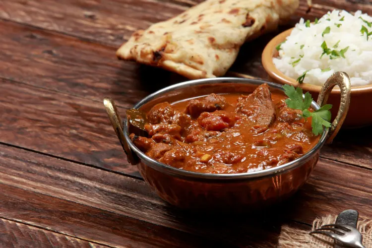
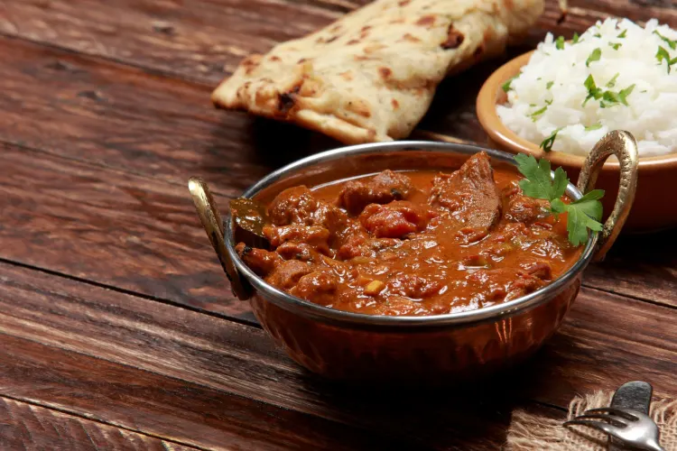

1. Biryani
Biryani is a flavorful and aromatic rice dish , traditionally made with a mix of spices , meat , and vegetables.Originating from South Asia , it's a popular dish known for its rich taste and unique blend of ingredients , including saffron and yogurt . Biryani is often enjoyed as a festive or celebratory meal , with regional variations that reflect local flavors and cooking styles.
2. Tandoori Chicken
Tandoori chicken is a popular Indian dish made by marinating chicken in a mixture of yogurt and spices , then roasting it in a traditional clay oven called a tandoor . The dish is known for its vibrant red or orange color , which comes from spices like turmeric , paprika , and sometimes food coloring . Tandoori chicken is loved for its smoky flavor , tender texture , and is often served with naan , rice , or chutneys.
3. Mutton Rogan Josh
Mutton Rogan Josh is a classic Kashmiri dish featuring tender lamb or mutton cooked in a rich , aromatic gravy made from yogurt , browned onions , and a blend of traditional spices . The dish is characterized by its deep red color , which comes from the use of Kashmiri red chili and saffron , offering a mildly spicy yet flavorful taste . Mutton Rogan Josh is often enjoyed with steamed rice or naan , and is a staple in Indian and Kashmiri cuisine , celebrated for its hearty and warming flavors.

 
